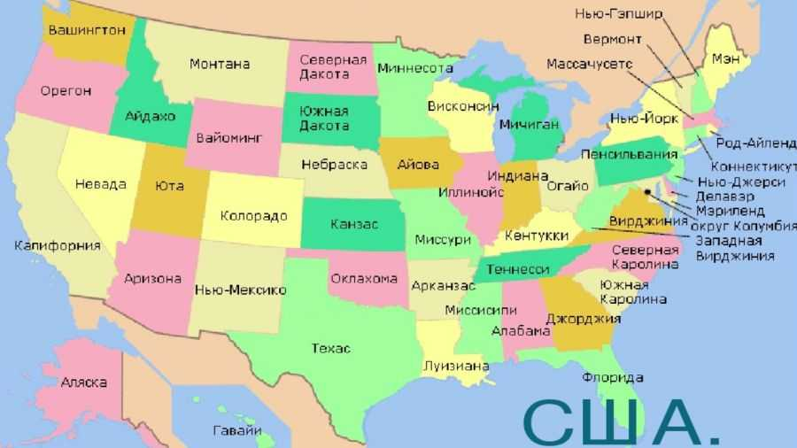
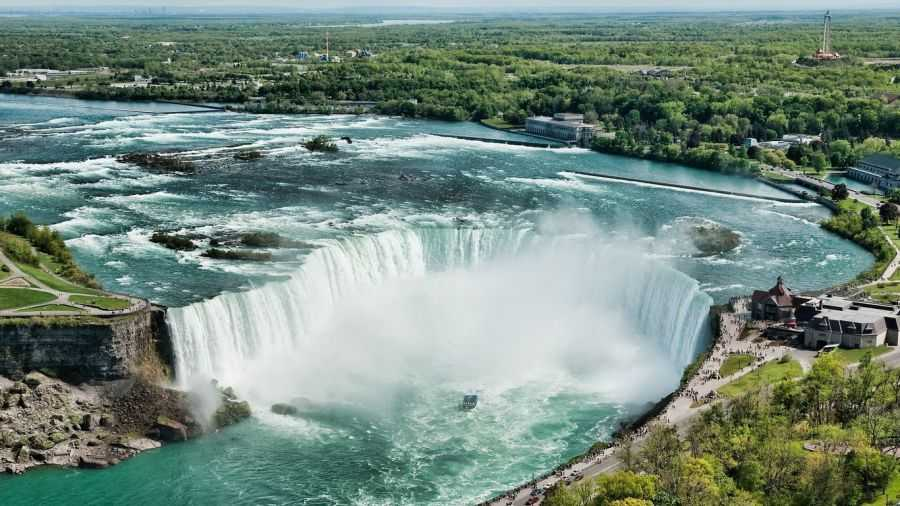
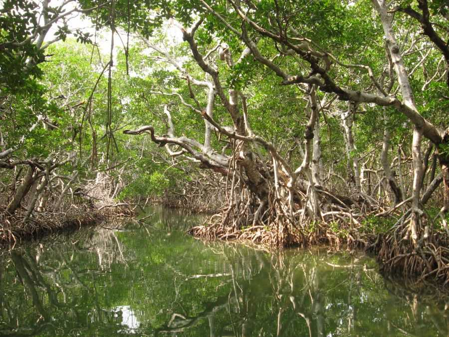
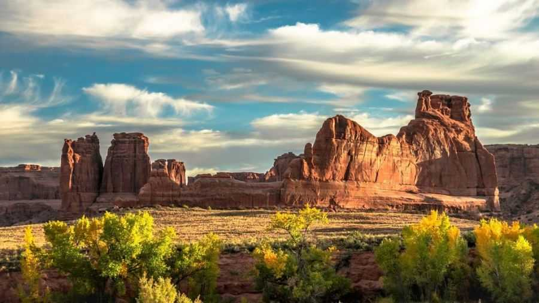
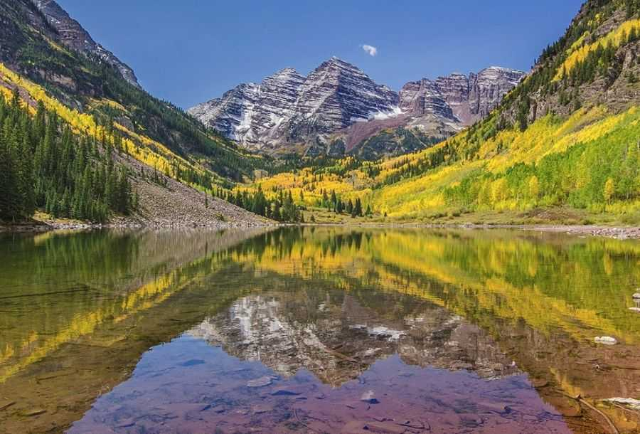
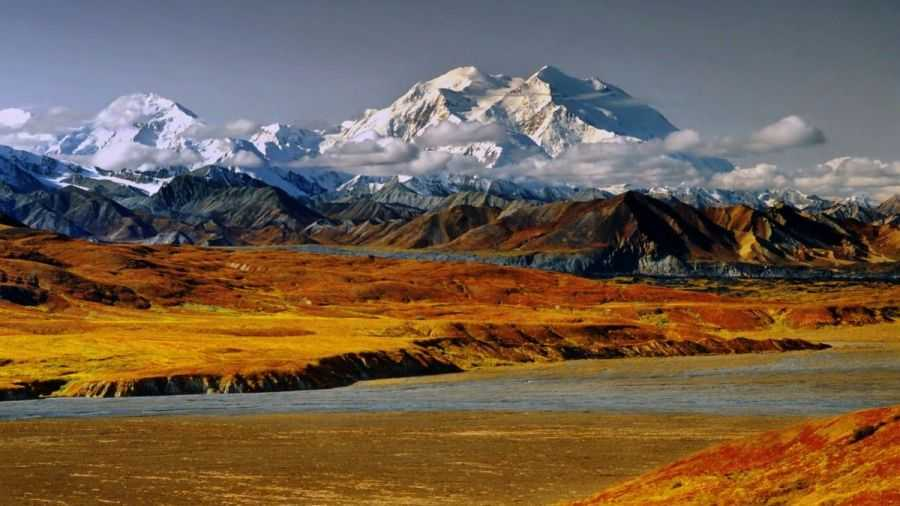
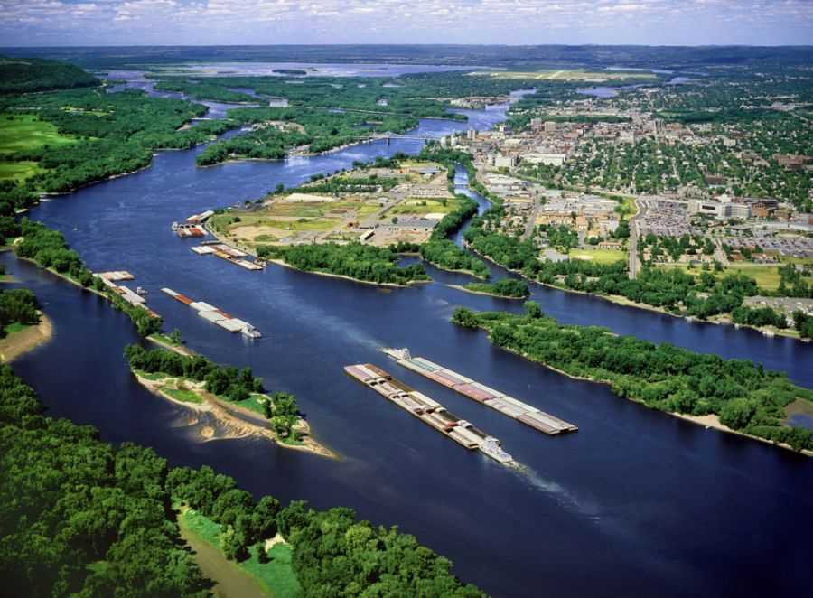
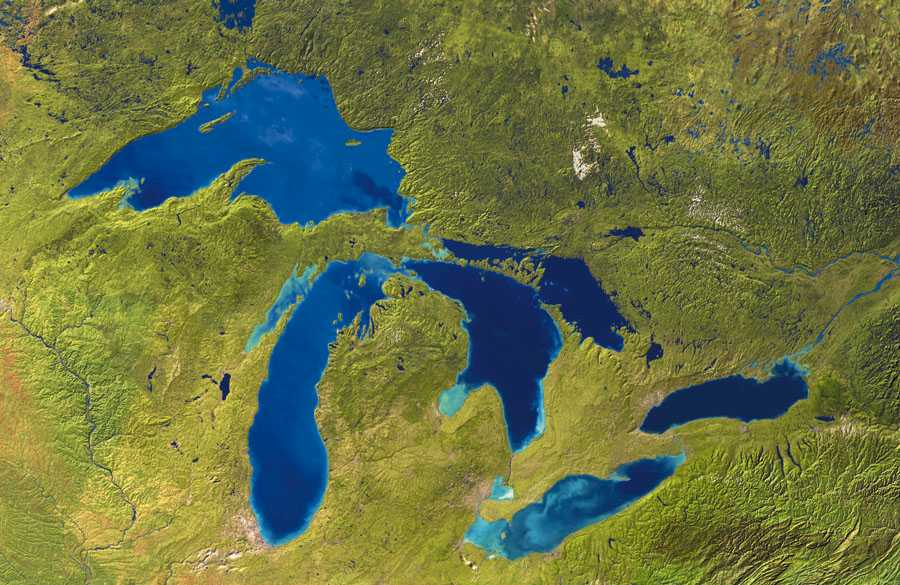

География США
Соединенные Штаты Америки — одна из самых больших стран мира. Площадь США составляет 9 833 517 км², по площади занимает 4-е место после России, Канады и Китая. В данной статье кратко охарактеризована география США.
Основная часть Соединенных Штатов Америки расположена на материке, поэтому и называется «континентальная». В её состав входит 48 штатов и Федеральный округ Колумбия со столицей городом Вашингтоном.
Отдельные, не континентальные штаты: Аляска, расположенная на северо-западе Северной Америки и штат Гавайи, который лежит на архипелаге в Тихом океане.
Также США принадлежат несколько территорий в Тихом океане и в Карибском море. Соответственно это Гуам, Федерация Микронезия в Тихом океане и Пуэрто-Рико в Карибском море.
Сухопутную границу США имеют с двумя странами — Канада на севере и Мексика на юге. По морю еще добавляется граница с Россией, которая проходит в районе Аляски. Континентальная часть США омывается Атлантическим океаном на востоке, Тихим — на западе и Мексиканским заливом на юге. Аляска с севера омывается Северным Ледовитым океаном.
Длина сухопутной границы США 12 048 км, в том числе:
- с Канадой — 8 893 км (из них 2 477 км граница с Аляской),
- с Мексикой — 3 155 км.
Протяженность береговой линии — 19 924 км.
Крайние точки территории США
Различают крайние географические точки континентальной части США, пятидесяти штатов США и всей территории США.
Самая северная точка США:
- Мыс Барроу, штат Аляска (71°23’20» с. ш., 156°28’45» з. д.) — самая северная точка территории США (и пятидесяти штатов США;)
- Озеро Вудс, штат Миннесота (49°23′04″ с. ш., 95°09′12″ з. д.) — самая северная точка континентальных штатов США.
Самая южная точка США:
- Атолл Розе, Американское Самоа (14°34’11» ю. ш., 168°9’10» з. д.) — самая южная точка территории США;
- Ка Лаэ, штат Гавайи (18°54’39» с. ш., 155°40’52» з. д.) — самая южная точка пятидесяти штатов США;
- Ки-Уэст, штат Флорида, (24°32′41″ с. ш., 81°48′37″ з. д.) — самая южная точка континентальных штатов США.
Самая восточная точка США:
- Пойнт Удолл, остров Сент-Круа, Виргинские острова США (17°45′19″ с. ш., 64°33′54″ з. д.) — самая восточная точка территории США;
- Скала Парус неподалеку от атлантического побережья, рядом с маяком Уэст Кводди, штат Мэн (44°48′45.2″ с. ш., 66°56′49.3″ з. д.) — самая восточная точка пятидесяти штатов США;
- Маяк Уэст Кводди неподалеку от города Лубек, штат Мэн (44°48′55.4″ с. ш., 66°56′59.2″ з. д.) — самая восточная точка континентальных штатов США.
Самая западная точка США:
- Пойнт Удолл, остров Гуам, Марианскиие острова (13°26′51″ с. ш., 144°37′5.5″ в. д.) — самая западная точка территории США;
- Остров Атту, Алеутские острова, штат Аляска (52°55′14″ с. ш., 172°26′16″ в. д.) — самая западная точка пятидесяти штатов США;
- Мыс Алава, штат Вашингтон (48°9′51″ с. ш., 124°43′59″ з. д.) — самая западная точка континентальных штатов США.
Интересно, что самая восточная и самая западная точки территории США названы одинаково — Пойнт Удолл Это не случайность:
- «Восточный» Пойнт Удолл на Виргинских островах был назван в честь Стюарта Удолла, министра внутренних дел США при президентах Джоне Кеннеди и Линдоне Джонсоне.
- «Западный» Пойнт Удолл на острове Гуам назван же в честь его брата, конгрессмена США Морриса Удолла.
Население
Общее население США по данным 2015 года составляет 321.2 млн. чел. Предки современных индейцев, которые считаются коренным населением Америки, пришли на континент скорее всего из Сибири через Аляску примерно 10 тысяч лет назад. Нынешнее население — это потомки европейских и африканских переселенцев XVII-XX веков.
В этой стране смешались между собой представители различных этнических групп, приехавшие на американский материк по разным причинам. В США возникло новое полиэтническое образование, называемое американской нацией. Каждая этническая группа обогатила американскую культуру и придала ей свой колорит.
Ландшафты США
Страна занимает обширную территорию Северной Америки. География США совершенно неоднородна, каждому району характерны свои ландшафты.
На Западе и на Востоке – горная местность. Среди горных цепей встречаются разнообразные каньоны, плато. Но западе климат более засушливый, здесь характерны пустыни и полупустыни.
Восток же обилует реками, озерами, болотистыми местностями и водопадами. Здесь соответственно влажнее.
Центральная часть США равнинная. В северной части расположены Великие озера. На северо-востоке территории США расположен Ниагарский водопад — самый крупный в мире.
А на южном полуострове Флорида произрастают тропические мангровые заросли.
География США разнообразна и уникальна. Природой создано огромное количество прекрасных мест, на которые стоит посмотреть. Гранд-Каньон и Йеллоустонский каньон с долиной гейзеров, Ниагарский водопад, гора Мак-Кинли, мангровые заросли на юге страны, «кактусовые леса» на западе.
Климат
Климат на территории США большей частью умеренный и субтропический континентальный. На Аляске климат арктический климат и средняя температура января составляет — минус 25 °С. На Флориде в это же время — плюс 20 °С. В июле средняя температура на западном побережье колеблется от + 14°С до + 22°С, на восточном —от + 16°С до +25°С. Имеются курорты, где практически круглый год царит лето. Температура ниже нуля по Цельсию зимой отмечается по всей территории, кроме Калифорнии, Флориды и конечно же Гавайских островов. Наибольшее количество осадков выпадает также на Гавайских островах (10 м в год), наименьшее — в пустыне Мохаве (менее 100 мм)
Третья часть территории страны занята лесами. На юге Аляски произрастают обширные хвойные леса, далее на север расположена преимущественно тундра с мхами и лишайниками. В центральной части растительность смешанная — ель, сосна, ясень, дуб, береза, сикомор. На восточном побережье, в северной его части, характерны кедровые, сосновые, лиственные леса. С передвижением на юг растительность приобретает субтропический характер, здесь появляются магнолии, каучуконосы. Побережье Мексиканского залива покрыто мангровой растительностью. В западной части страны, в регионе пустынь и полупустынь, произрастает юкка, кустарники и полукустарники. В пустынных районах произрастает множество суккулентов и кактусов. А в Калифорнии растут собственные цитрусовые, различные пальмы. Сьерра-Невада считается краем гигантских секвой.
Фауна США
Животный мир также в каждом регионе свой. Так, в северных районах, среди лесов, обитают медведи, олени, рыси, земляная белка. На Аляске, на побережье водятся моржи и тюлени. На востоке еще встречаются медведи-гризли. Там же живут олени, лисы, волки, скунсы, барсуки, большое количество птиц, среди которых пеликан, фламинго, зимородки, также здесь имеются аллигаторы, множество змей. На Великих равнинах встречаются в основном копытные, стада бизонов. В горных районах обитают лось, вилорог, горный козел, толсто-рог, медведи, волки. В пустынных районах — рептилии, мелкие млекопитающие, и, конечно, грызуны.
Горы
Пространство Соединенных Штатов Америки образуется горными системами хребтов и плоскогорьями. Наиболее крупное плато системы Кордильер, которая идет сверху вниз, распространившись на весь запад. Пространство от Аляски до Калифорнии занято горами. Цепь растет на протяжении 1 700 км, причем ее ширина достигает в некоторых местах тех же 1 700 км. Таким образом, горы Кордильер занимают треть США. Также известными являются горыАппалачи и древние возвышенности, которые впрочем уже успели превратиться в плато.
Самые высокие горы – оледеневшие. На северной и восточной части Америки горные вершины покрыты лесами. Между горами в котловинах царит средиземноморский вид флоры.
В континентальной части США согласно физико-географическим показателям выделяют такие регионы, как:
- Аппалачи;
- Атлантическая низменность;
- Лаврентийская возвышенность;
- Внутренние равнины;
- Внутреннее нагорье;
- Скалистые горы;
- Межгорные плато;
- Горы Тихого океана.
Самая высокая гора в США – Мак-Кинли на Аляске.
Реки США
Основной сток рек на территории США происходит в бассейны океанов, омывающих берега этой страны. Режим течения рек не стабилен, потому что многие из них активно используются в хозяйственной деятельности и подвергается воздействию промышленности.
Миссисипи — главная река США, вместе со своим притоком Миссури создает крупную разветвленную сеть речных водоемов по всей стране.
Наиболее протяженные реки имеют исток в горных хребтах, например, в Аппалачах. Очень многие реки расположены далеко от океанских побережий и не достигают их. Они часто пересыхают или впадают в замкнутые озера.
Озера
К самым крупным озерным водоемам Америки стоит отнести Великие озера. Самыми крупными из них являются Верхнее, Гурон, Мичиган, Эри и Онтарио. Эти озера пресноводные, их связывают между собой проливы и реки. Их общая площадь равна 245 тысяч км2. Кроме 5-ти крупных вышеперечисленных озер в систему входит множество мелких. В районе Великих озер активно развивается судоходство, туристические маршруты с целью посещения небольших островов и Ниагарского водопада.

Также стоит отметить крупное озеро западного полушария в штате Юта. Называется оно Большое Соленое. Данное озеро не имеет стока и меняет свою площадь в соответствии с уровнем осадков.
Крупные озера расположены в штатах Аляска, Орегон, Невада, Калифорния.
Государственное устройство
Форма правления США — Республика с федеративным государственным устройством.
Глава государства США — Президент, избирается на 4 года.
Высший законодательный орган США — Конгресс, состоит из двух палат: Сенат (избирается на 6 лет) и Палата представителей (срок полномочий — 2 года).
Высший исполнительный орган США — Правительство — Кабинет министров, назначаемый президентом с согласия Сената.
География США не может быть описано в одной статье. Но если вам нужна была обзорная информация, надеюсь вы её получили на моем сайте.